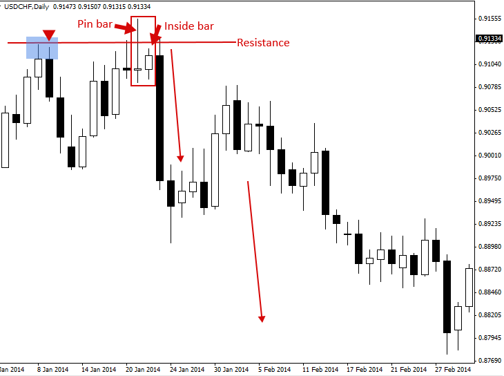

Pin Bar and Inside Bar Combo Trading Strategy
Pin bar and Inside bar Combo Patterns
A pin bar is a price action strategy that shows rejection of price and indicates a potential reversal is imminent. An inside bar is a price action strategy that shows consolidation and that a potential breakout is imminent. These two signals, when combined, result in either a ‘pin bar combo’ pattern or an ‘inside bar – pin bar combo’ pattern.
Pin bar and inside bar combination patterns are some of the most potent price action signals you will encounter. There are two main ‘combo patterns’ you should focus on learning.
1) The pin bar + inside bar combo, consists of a pin bar that consumes a small inside bar toward the nose of the pin (the pin bar’s real body).
2) The inside pin bar combo setup is simply a pin bar that’s also an inside bar. In other words, a pin bar that’s within the range of an outside bar or mother bar.

How to Trade the Pin Bar + Inside Bar combo pattern
When looking for pin bar inside bar combo patterns, you will first be looking for just a pin bar, if you see a pin bar immediately followed by an inside bar that’s contained within the high-to-low range of the pin bar, then you have a pin bar + inside bar combo pattern. As mentioned above, it’s ideal of the inside bar forms near the pin bar’s nose (real body).
Of the two combo patterns discussed in this tutorial, the pin bar + inside bar combo is the most powerful and it’s an ideal setup to trade on the daily chart either from pullbacks to key levels or as breakout plays in trending markets on the 4 hour or daily charts.
Let’s take a look at some examples:
In the chart example below, we can see a nice example of a pin bar inside bar combo pattern that formed following a pullback to a support level in an upward trending market. These types of combo patterns are very powerful because they give you the chance to get a better entry on the pin bar (near its 50% level) and allows you to get a ‘tight’ stop loss either below the inside bar low or below the key support level. When you see a pin bar followed by an inside bar or even multiple inside bars like we see in the example below, it’s time to take notice because you might have a potential trade entry on your hands…

Here’s another example of the pin bar and inside bar combo pattern. This time, it’s more of a reversal pattern because it formed at a resistance level, causing a false break of that resistance level and then set off a move to the downside. This combo pattern again allowed a trader to get a ‘tight’ entry by entering as the inside bar retraced up the pin bar’s tail, the stop loss could have been placed just above the resistance level or near the pin bar’s high. We can see a dramatic sell-off unfolded as price broke down below the inside bar.

How to Trade the Inside-Pin Bar combo pattern
Inside pin bars are exactly what their name suggests; pin bars that are also inside bars. These setups seem to work best in trending markets and on the daily chart time frames.
In the example below, we can see a strong uptrend was in place prior to the formation of the inside pin bar combo pattern. We can then see price broke out above the high of the mother bar and this would have been the entry point into the trend. Traders can place a ‘buy on stop’ entry just above the mother bar high on an inside-pin bar combo setup like this one. Then as price breaks out in-line with the trend, you are brought into the trade in-line with the current market momentum…

The chart below shows us another example of a good inside-pin bar combo pattern. This time, the trend was down or ‘bearish’, and as price consolidated for several days it ended up forming the bearish inside-pin bar sell signal that we see in the chart below. Inside pin bar combos work very good as ‘continuation patterns’ in trending markets, a continuation pattern is simply a pattern that implies the trend will continue moving in its existing direction. Note, the aggressive sell-off that took place once price broke down below this inside-pin bar’s mother bar…

Pin bar and Inside bar Combo Pattern Trading Tips
- Always be on the lookout for pin bars followed by inside bars. Often, a one-day pause after a pin bar, in the form of an inside bar, will be your last chance to enter the market before price moves away aggressively from the pin bar reversal signal.
- Often, you can place your stop loss just above (or below) the inside bar in a pin bar + inside bar combo setup, this gives you the ability to trade a slightly bigger position size and improves the risk reward scenario of the trade.
- Look for inside-pin bar combo setups in trending markets, especially in noticeably strong trends they tend to be very reliable as breakout / trend-continuation plays.
- Inside-pin bar setups are best on the daily chart time frame whereas pin bar + inside bars work well on both the daily and 4 hour chart time frames.
Original source : https://priceaction.com/price-action-university/strategies/pin-bar-inside-bar-combo/